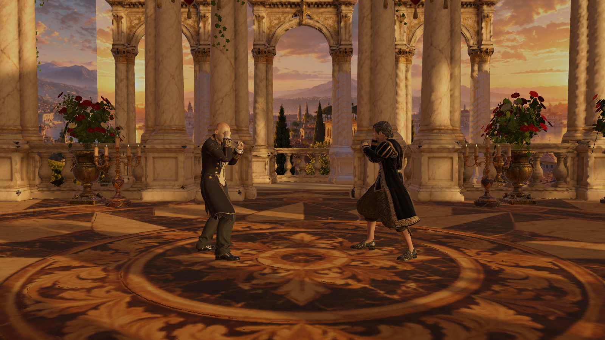
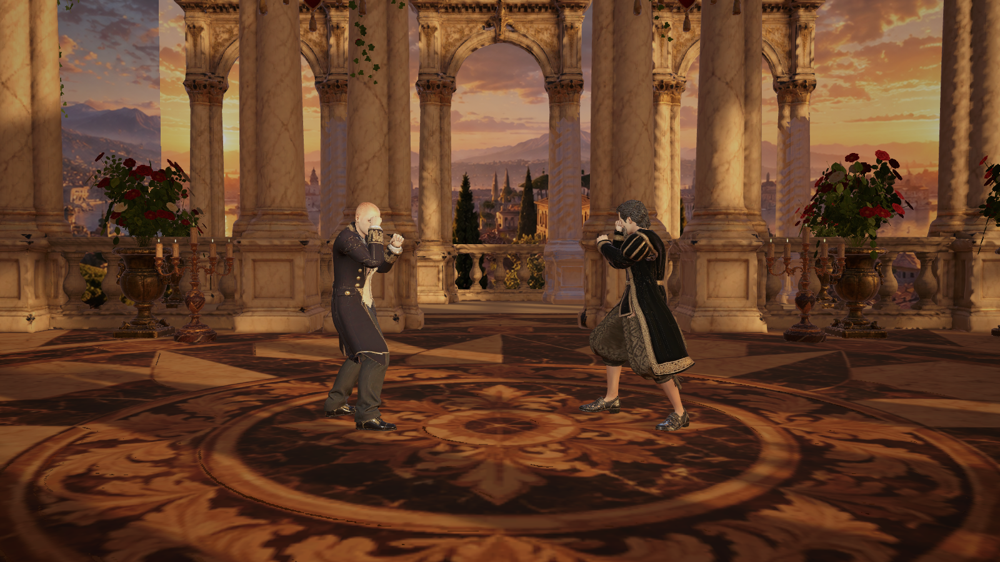
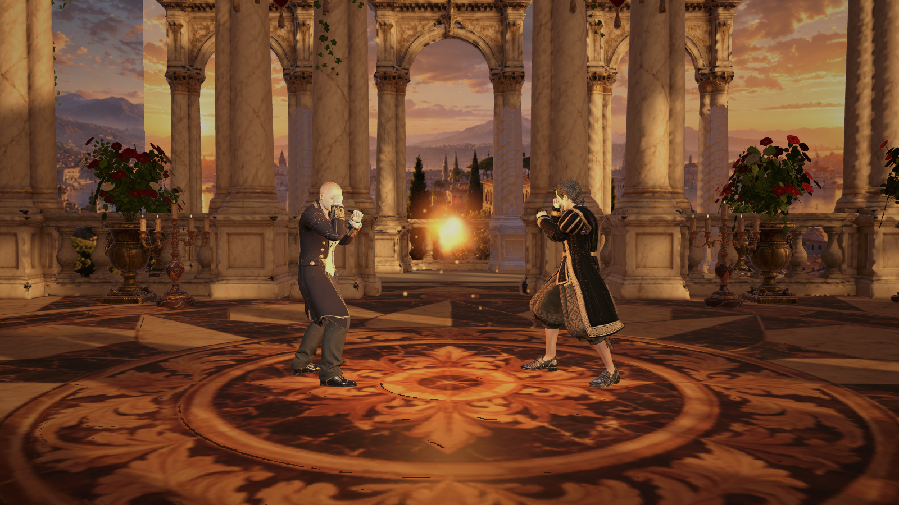
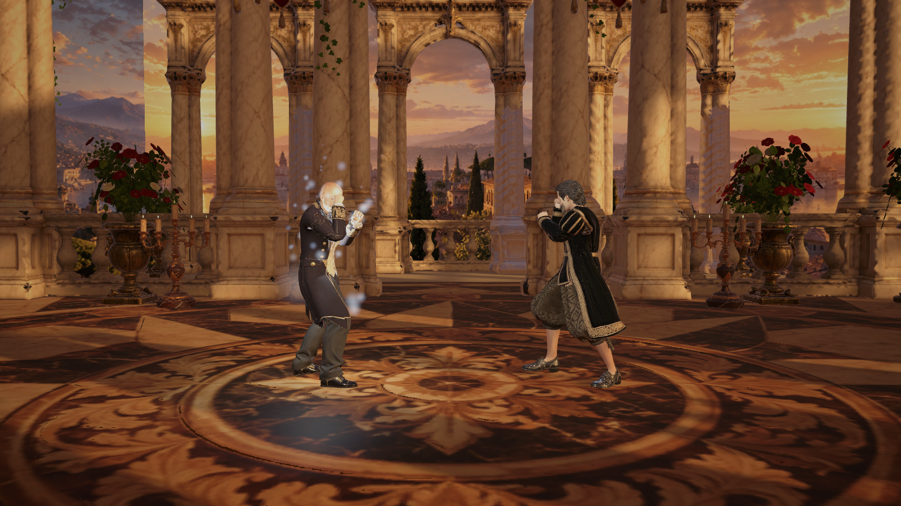
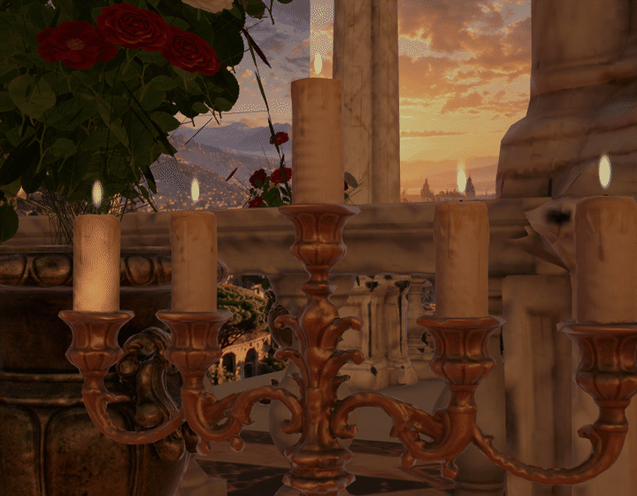

Personatges reals del joc. Comparació amb la mateixa càmera i la mateixa postura.


Esquerra: proposta · dreta: sense tractament. Mou el control per comparar.
Contrast moderat, saturació una mica més baixa, vinyeta suau i dues llums exclusives per als personatges. Bloom discret per als elements més brillants.
Especial: efecte real FightFireballVisual

Poder: aura real FighterAuraFx


Un sistema per canelobre, compartit entre les cinc espelmes. Sense afegir llums ni ombres per cada flama.
Com obrir la prova, abast i comprovacions · Verificació en mode joc